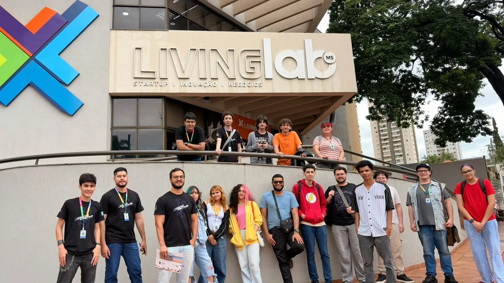

Programação
Algoritmos, motores de jogos, bancos de dados e experiências multijogador.
IFMS / CAMPUS DOURADOS
Mais que jogar, aqui formamos quem cria jogos.
Curso Superior de Tecnologia em Jogos Digitais. Uma graduação pública e gratuita que reúne arte, programação e game design.

VIDA ACADÊMICA
A GRADUAÇÃO
Algoritmos, motores de jogos, bancos de dados e experiências multijogador.
Modelagem, animação, narrativa, pintura digital e construção de mundos.
Projetos integradores, extensão, marketing e empreendedorismo.
PORTFÓLIO
Instagram, portfólio, canais de atendimento e serviços do curso.